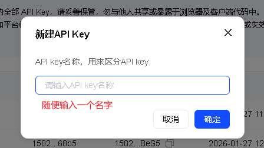
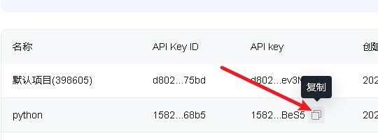
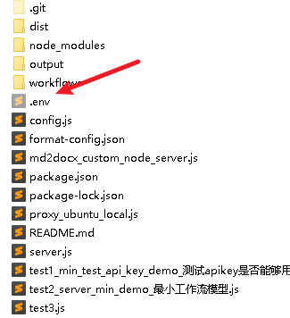
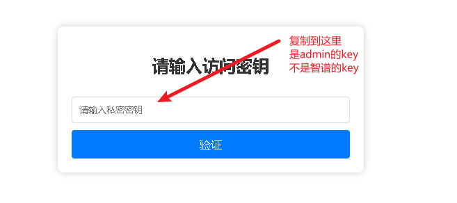
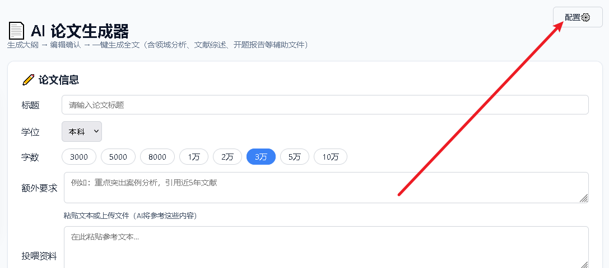
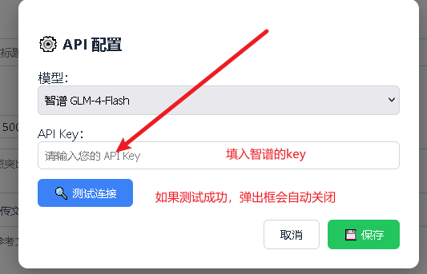

从 API Key 申请 到 生成全文，手把手带你完成配置
智谱开放平台提供免费的 API Key，用于调用大模型能力。 没有这个 Key，整个系统无法运作。
点击左上角的 「新建 API Key」，在弹出框中任意输入一个名称（如 my-agent），点击确认。

创建成功后，将鼠标悬停到新生成的 Key 上，点击右侧的 复制图标。 请妥善保存，后续配置需要用到。

.env 文件
必做
在项目根目录找到 .env 文件（若没有则新建）。

.env 文件
· 注意文件名以点开头
ADMIN_SECRET_KEY
关键
在 .env 中找到 ADMIN_SECRET_KEY=，
将 等于号后面的内容复制，准备在登录系统的时候输入 。
在浏览器中访问本地服务地址，进入系统登录页。
http://localhost:3000
本地
打开浏览器，输入 http://localhost:3000/ 进入系统主页。
如果服务已启动，你会看到登录界面。
然后将前面复制的密钥粘贴进去，点击登录

进入系统后，将智谱 API Key 填入配置项并测试连通性。
进入系统主页后，点击右上角的 ⚙️ 配置图标，打开配置弹窗。

在弹出框中将智谱 API Key 粘贴到对应输入框，然后点击 「测试」 按钮。 若提示成功，说明配置无误。

配置完成后，你就可以使用论文 Agent 辅助写作了。核心流程如下：